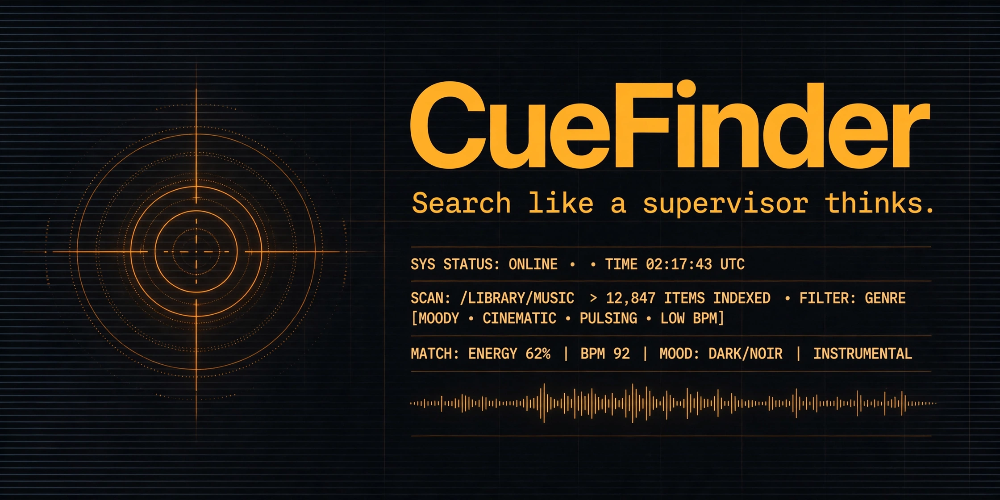

← CueFinder
CUEFINDER — brand
2AM at the supervisor's desk. Terse, technical, honest. No hype. No exclamation points.
PALETTE
background#0A0C10
panel#12151C
signal amber#FFB224
phosphor green#3DFF88
text#EDEFF2
secondary#8A93A3
rights attention#FF5C5C
TYPOGRAPHY
Space Grotesk — headings, brand
wordmark, titles, row titlesIBM Plex Mono — data, readouts, explanations
match lines, timing, counts, provenance labelssystem-ui — body text, fallback
long-form copy only; the desk speaks monoPROVENANCE LABELS (structural, never decorative)
verified — titles, artist, Spotify links, explicit flags, producer/studio credits.editorial — mood, energy, instrumentation, scene, use-case tags. Curated by the CWI Sync department. Not audio analysis.estimate — every BPM value. Labeled est. Never measured.rights — no one-stop or pre-cleared claims. Direct clearance via hp@cumulativeweb.com.
VOICE
- Terse. Technical. The machine reports; the supervisor decides.
- Factual, demonstrable claims only. No named-company comparisons. No superlatives.
- Result counts are promises: "N licensable matches," never "N matches."
SOCIAL PREVIEW

TOKENS
tokens.css — palette, type, and motion variables consumed by every CueFinder surface.